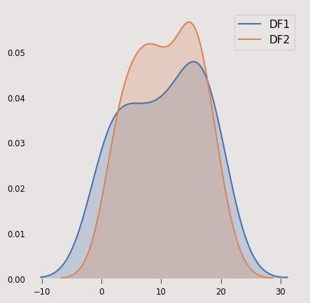
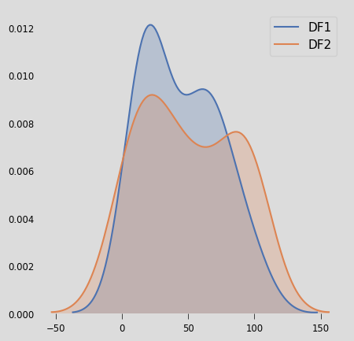
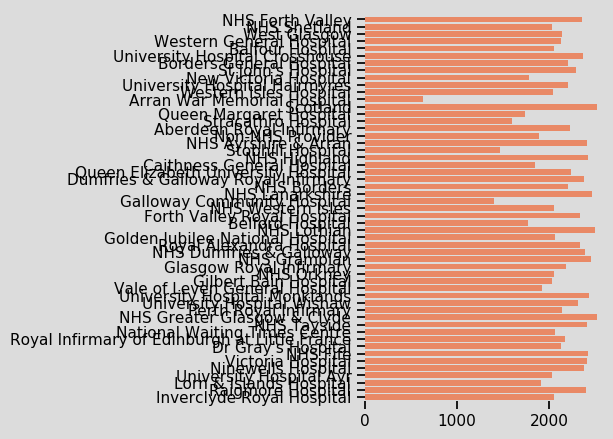
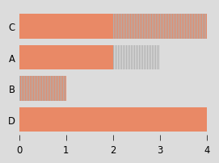

Built using Seaborn, Bootstrap and Jinja2 templates
| DF1 | |
| data_1.csv | |
| Number of rows | Number of columns |
| 25 | 6 |
| DF2 | |
| data_2.csv | |
| Number of rows | Number of columns |
| 30 | 7 |
| Variable Name | Uniques | Duplicates | NAs | |
| hbres_name | DF1 | 4 | True | 0 |
| Same | Same | Same | ||
| DF2 | ||||
| 4 | True | 0 | ||
| gender | DF1 | 2 | True | 0 |
| Less | Same | Same | ||
| DF2 | ||||
| 3 | True | 0 | ||
| age | DF1 | 24 | True | 0 |
| Less | Same | Same | ||
| DF2 | ||||
| 28 | True | 0 | ||
| Variable Name | Min | Max | Mean | 25% | 75% | NAs | ||
| episodes | DF1 | 1.0 | 20.0 | 10.42 | 5.25 | 16.25 | 1 |  |
| Less | Same | Less | Less | Greater | Greater | |||
| DF2 | ||||||||
| 2 | 20 | 10.73 | 7.0 | 15.0 | 0 | |||
| length_of_stay | DF1 | 10 | 100 | 44.64 | 18.0 | 63.0 | 0 |  |
| Greater | Same | Less | Less | Less | Same | |||
| DF2 | ||||||||
| 3 | 100 | 50.03 | 20.25 | 88.75 | 0 | |||
| Variable Name | Format | Date From | Date To | Frequency | Breaks? | NAs | |
| reporting_date | DF1 | %d/%m/%Y | 2018-01-01 | 2018-06-01 | month | interruped | 0 |
| Different | Same | Greater | Different | Different | Less | ||
| DF2 | |||||||
| %d-%m-%Y | 2018-01-01 | 2018-04-01 | quarter | continuous | 1 | ||
Cross-hatching indicates differences between two datasets
Here's the first dataset
Here's the second dataset
